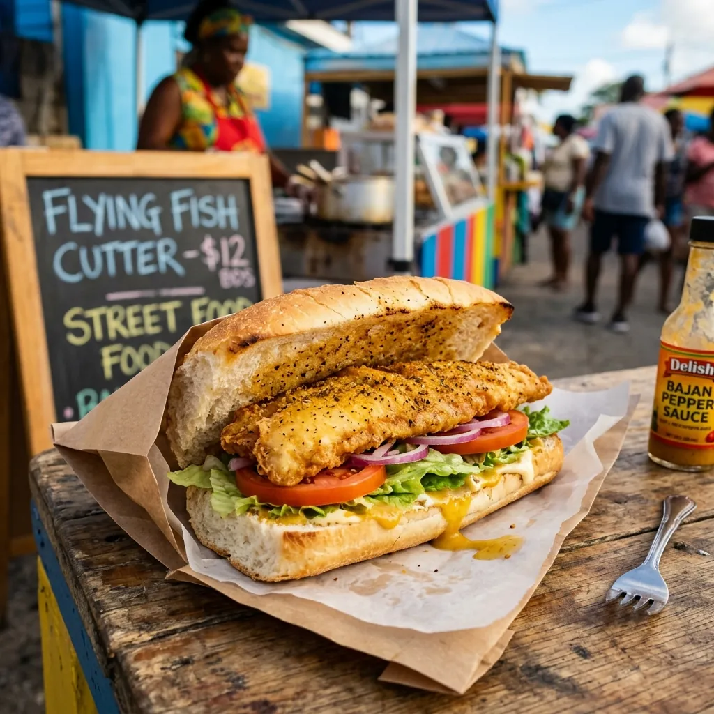
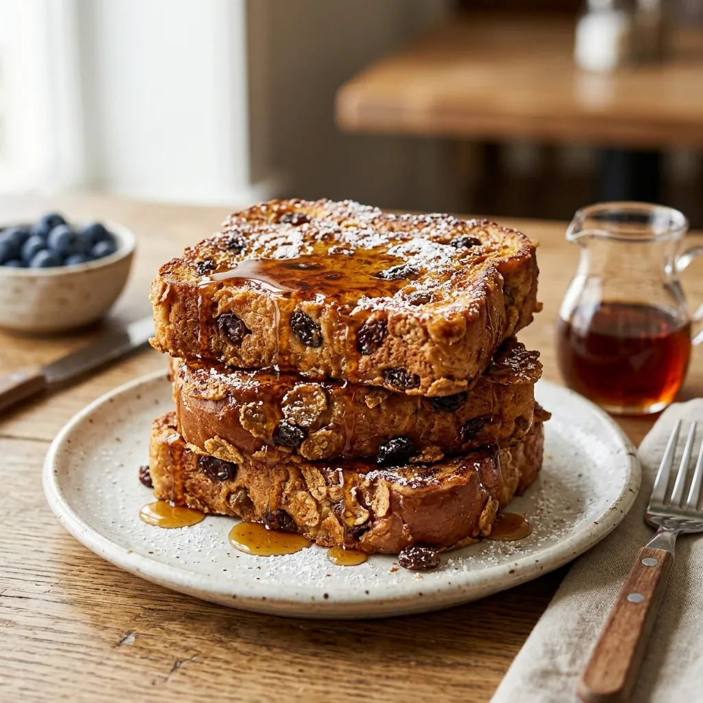
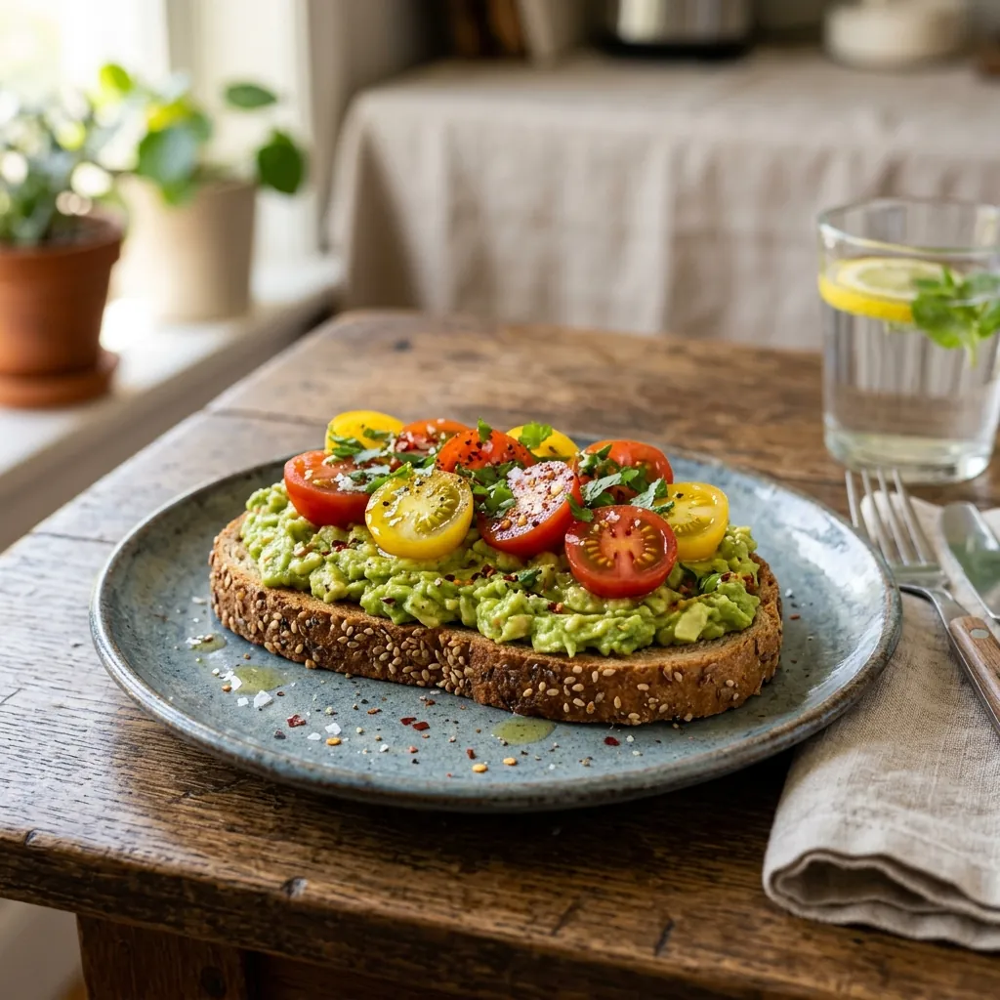

Recipes
Elevate your daily table. Discover delicious Bajan classics and creative modern twists crafted around our traditional loaves and rolls.

Bajan Classic
The legendary Barbadian sandwich: seasoned flying fish fried crispy, tucked inside a fresh Zephirin's Salt Bread roll.

Breakfast Specialty
Thick slices of spiced sweet raisin bread soaked in egg custard, griddled golden, and drizzled with Bajan molasses.

Modern Twist
A delightful balance of sweet and savory: toasted Coconut Sweet Bread topped with mashed avocado, chili flakes, and sea salt.
Baker's Wisdom
Keep your loaves tasting as fresh as the moment they left our ovens.
Because we bake without artificial preservatives, store your bread at room temperature in its original plastic bag or a bread box. Avoid storing in the refrigerator as this causes the bread to dry out and go stale faster. Use or freeze within 3–4 days.
Absolutely! Our loaves and rolls freeze beautifully. Wrap them tightly in plastic wrap or keep them in their original bag, then place them in the freezer for up to 3 months. Slice the loaf before freezing so you can easily toast individual slices directly from the freezer.
To bring back that fresh-baked crust and soft interior, preheat your oven or toaster oven to 350°F (175°C). Mist the roll lightly with a little water (or wrap in a damp paper towel for 10 seconds in the microwave first), then bake in the oven for 5 to 7 minutes. It will taste brand new!
Located right next to our Bridgetown ovens. Drop in for daily essentials, cold drinks, and hot baked bread straight from the kitchen.